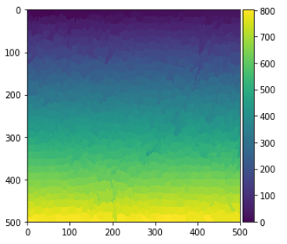

Moore Neighbor Tracing算法用来实现对目标边界进行追踪。即所谓的轮廓跟踪。在了解该算法前，首先了解什么是Moore Neighbor.
Moore Neighborhood
在了解MNCT算法前，首先了解什么是 Moore Neighborhood。 像元P的 Moore 邻域也就是与该像素共享顶点或边缘的8个像素的集合。如图1所示，也就是P1,P2….,P8。Moore邻域也就是我们常见的8邻域，是图相处理领域中的一个重要概念。

Moore Neighbor Tracing Algorithm
Moore Neighbor Tracing算法描述如下：
算法输入： 一个矩形图像T，包含一个内部均质（以黑色为例）的对象P
算法输出： 对象P的边界像素序列B(b1,b2,...bk)，也就是P的轮廓
定义M(a)为像素a的Moore 邻域
定义p 为当前边界像素
定义c 为所考虑的当前像素，即c在M(p)中
开始
设置
B为空从下到上、从左到右扫描
T，直到遇到属于对象P的黑色像素s将
s插入B中设置当前边界像素
p为s，也就是p=s回退，退回到移动到
s前的像素位置设置
c为M(p)顺时针顺序中的下一个像素位置当
c不等于s时：如果
c是黑色：- 将
c插入B中 - 设置
p=c - 回退
否则：
- 顺时针前进到
M(p)中的下一个像素
重复上述过程
- 将
结束
算法的可视化流程如下图所示

Moore Neighbor Tracing in Python
本实例根据算法基本原理，追踪获取目标的边界坐标。具体代码及其变量介绍如下：
1 | def moore_neighbor_tracing(object,label): |
使用Moore Neighbor Tracing 算法绘制分割图的边界
以下实例使用Moore Neighbor Tracing来绘制SLIC分割结果的边界。
1 | def slic(img, n_segments): |
运行结果如下：
